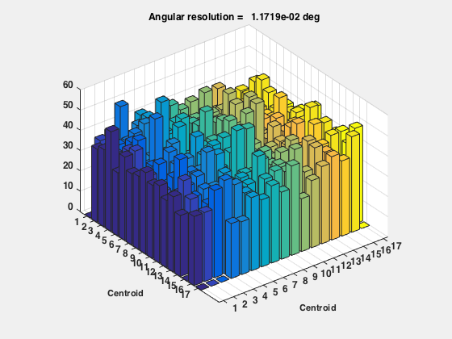
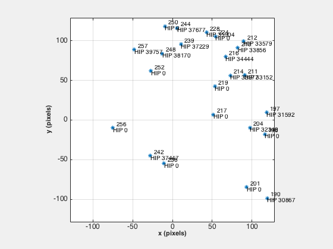

Demonstrates static attitude determination.
Look at random locations in the sky to test the star identification
algorithms.
------------------------------------------------------------------------
See also Mat2Q, Q2Mat, QPose, QRand, SaveStructure,
ComputePixelMapScale, PinholeStarCamera, QFromU, StarIdentification,
LoadCatalog, StarDataGeneration
------------------------------------------------------------------------
Contents
Script options
nSim = 10;
plotStars = true;
noiseOn = false;
Star identification options
options = struct;
options.useAbsoluteIntensity = true;
options.intensityTolerance = 0.001;
options.useTriad = true;
Camera parameters
pixels = 256;
degToRad = pi/180;
fieldOfView = 30*degToRad;
camera = PinholeCameraStruct( pixels, fieldOfView );
camera.gain = 1e9;
camera.sigmaXY = 0.1;
camera.noise = noiseOn;
angularResolution = 0.1*fieldOfView/pixels;
Default FK5 catalog
catalogName = 'ADSimStaticCatalog.mat';
if( isempty(which(catalogName)) )
starCatalog = LoadCatalog('Hipparcos',4.2);
d = StarDataGeneration( starCatalog, fieldOfView, angularResolution );
SaveStructure( d, FileFullpath(catalogName) );
else
d = load(catalogName);
end
d.pixelMapScale = camera.fScale;
Adjust intensity for the camera gain
d.starMatrix(1,:) = d.starMatrix(1,:)*camera.gain;
Loop
nGood = 0;
nStars = 0;
for j = 1:nSim
fprintf(1,'\n-----------\nRun %i\n-----------\n',j);
qECIToBody = QRand;
[rA, dec] = Q2RADec( [0;0;1], qECIToBody );
fprintf(1,'RA: %f Dec: %f\n',rA*180/pi,dec*180/pi);
bBodyToCamera = [0 0 1;0 1 0;-1 0 0];
bECIToCamera = bBodyToCamera*Q2Mat(qECIToBody);
starMeasurement = PinholeStarCamera( bECIToCamera, camera, d.starCatalog, plotStars );
if (plotStars)
str = get(gcf,'name');
set(gcf,'name',['Run ' num2str(j) ': ' str]);
drawnow
end
[starID, uMeas, uCatalog] = StarIdentification( starMeasurement, d, options, plotStars );
if (plotStars)
pos = get(gcf,'position');
str = get(gcf,'name');
set(gcf,'position',[pos(1)+pos(3) pos(2:4)]);
set(gcf,'name',['Run ' num2str(j) ': ' str]);
drawnow
end
if( ~isempty(uMeas) )
starID
[qMeas, bMeas] = QFromU( uMeas, uCatalog );
qECIToBodyMeas = Mat2Q( (bMeas*bBodyToCamera));
if( ~isempty(qMeas) )
nGood = nGood + 1;
nStars = nStars + length(starID);
fprintf(1,'qTrue = [%8.4f %8.4f %8.4f %8.4f]\nqEstimate = [%8.4f %8.4f %8.4f %8.4f]\nerror = %12.4e\n',...
qECIToBody,QPose(qECIToBodyMeas),norm(qECIToBody-QPose(qECIToBodyMeas)));
else
fprintf(1,'qTrue = [%8.4f %8.4f %8.4f %8.4f] No estimate possible.\n',qECIToBody);
end
end
end
if( nGood > 0 )
fprintf(1,'\n%i out of %i tests produced a valid attitude using an average of %i stars\n',...
nGood,nSim,floor(nStars/nGood));
end
-----------
Run 1
-----------
RA: 72.955595 Dec: 17.942173
Table of Star Names
-------------------
Number Name
594
596
642
643
652 IOT Cy
658
664
681
682
683
692
698 Dene
700
710
715 Alderami
716
720
721
731
736
743
753
starID =
Columns 1 through 13
594 596 642 643 652 658 664 681 682 683 692 698 700
Columns 14 through 22
710 715 716 720 721 731 736 743 753
qTrue = [ 0.5383 0.2457 -0.5344 -0.6035]
qEstimate = [ 0.5383 0.2457 -0.5344 -0.6035]
error = 5.6132e-16
-----------
Run 2
-----------
RA: 51.963516 Dec: -33.158233
Table of Star Names
-------------------
Number Name
267
275
276
279
281
298
304 Alphar
310
311
312
323 Regulu
332
starID =
267 275 276 279 281 298 304 310 311 312 323 332
qTrue = [ 0.4503 0.8308 -0.2884 0.1541]
qEstimate = [ 0.4503 0.8308 -0.2884 0.1541]
error = 5.2369e-16
-----------
Run 3
-----------
RA: 42.687506 Dec: -54.574573
Table of Star Names
-------------------
Number Name
161
166
173
177
181
182
184
188
191
193
195
198 GAM Ge
202
203
205
210
215
225
226
229
231
245
247 Pollu
starID =
Columns 1 through 13
161 166 173 177 181 182 184 188 191 193 195 198 202
Columns 14 through 23
203 205 210 215 225 226 229 231 245 247
qTrue = [ 0.3038 0.6822 -0.6649 0.0162]
qEstimate = [ 0.3038 0.6822 -0.6649 0.0162]
error = 5.6899e-16
-----------
Run 4
-----------
RA: 131.905939 Dec: -29.360649
Table of Star Names
-------------------
Number Name
494
536
539
551
553
554
555
556
557
558
560
564
570
571
573
574
576
577 Shaul
579
585
587
589
592
593
604
616
620
635
starID =
Columns 1 through 13
494 536 539 551 553 554 555 556 557 558 560 564 570
Columns 14 through 26
571 573 574 576 577 579 585 587 589 592 593 604 616
Columns 27 through 28
620 635
qTrue = [ 0.5003 0.5595 0.6574 0.0676]
qEstimate = [ 0.5003 0.5595 0.6574 0.0676]
error = 3.6428e-16
-----------
Run 5
-----------
RA: -133.839722 Dec: -11.607799
Table of Star Names
-------------------
Number Name
562
568
594
596
612
623
631
642
643
652 IOT Cy
658
664
700
715 Alderami
716
720
721
starID =
Columns 1 through 13
562 568 594 596 612 623 631 642 643 652 658 664 700
Columns 14 through 17
715 716 720 721
qTrue = [ 0.1260 -0.6374 -0.4408 0.6193]
qEstimate = [ 0.1260 -0.6374 -0.4408 0.6193]
error = 4.9728e-16
-----------
Run 6
-----------
RA: -22.718027 Dec: 5.641214
Table of Star Names
-------------------
Number Name
70 TET02 Er
77
79
83
97
109
111
115 d Er
119
121
125
134
147
starID =
70 77 79 83 97 109 111 115 119 121 125 134 147
qTrue = [ 0.2104 0.5202 -0.4245 0.7105]
qEstimate = [ 0.2104 0.5202 -0.4245 0.7105]
error = 4.2276e-16
-----------
Run 7
-----------
RA: -84.184298 Dec: -33.703217
Table of Star Names
-------------------
Number Name
495
532
535
547
550
562
572
584
594
596
597 GAM Dr
605
starID =
495 532 535 547 550 562 572 584 594 596 597 605
qTrue = [ 0.3932 -0.6817 -0.5593 0.2607]
qEstimate = [ 0.3932 -0.6817 -0.5593 0.2607]
error = 2.0015e-16
-----------
Run 8
-----------
RA: -175.663306 Dec: -20.496385
Table of Star Names
-------------------
Number Name
109
111
115 d Er
119
120
121
125
147
154
163
168
171
178
186
starID =
Columns 1 through 13
109 111 115 119 120 121 125 147 154 163 168 171 178
Column 14
186
qTrue = [ 0.5363 -0.3362 0.7497 0.1932]
qEstimate = [ 0.5363 -0.3362 0.7497 0.1932]
error = 6.1125e-16
-----------
Run 9
-----------
RA: 19.728100 Dec: -12.491299
Table of Star Names
-------------------
Number Name
190
196
197
201
204 Siriu
211
212 Adhara
213
214
216
217
219
224
228
236
239
242
244
248
250
252
256
257
starID =
Columns 1 through 13
190 196 197 201 204 211 212 213 214 216 217 219 224
Columns 14 through 23
228 236 239 242 244 248 250 252 256 257
qTrue = [ 0.4571 0.6938 -0.3561 0.4277]
qEstimate = [ 0.4571 0.6938 -0.3561 0.4277]
error = 9.0024e-16
-----------
Run 10
-----------
RA: -71.187650 Dec: 62.764387
Table of Star Names
-------------------
Number Name
569
573
577 Shaul
582
585
589
591
592
593
602 GAM Sg
606
609
610
611
615 Kaus Australi
617
618
624
629 SIG Sg
632
634
637
640
641
644
646
starID =
Columns 1 through 13
569 573 577 582 585 589 591 592 593 602 606 609 610
Columns 14 through 26
611 615 617 618 624 629 632 634 637 640 641 644 646
qTrue = [ 0.6455 -0.2048 0.1162 -0.7265]
qEstimate = [ 0.6455 -0.2048 0.1162 -0.7265]
error = 5.4177e-16
10 out of 10 tests produced a valid attitude using an average of 19 stars

 